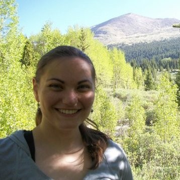
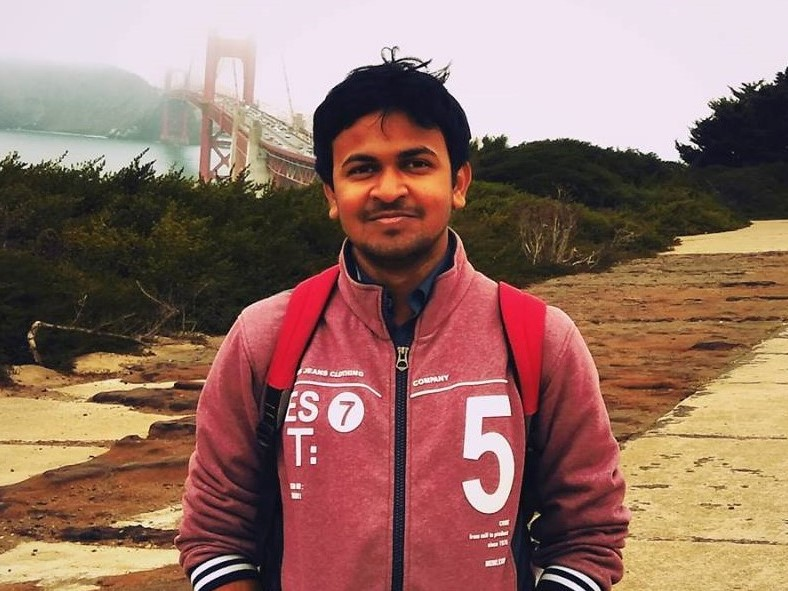

|
 |
 |
| Payam Delgosha |
Vidya Muthukumar |
Orhan Ocal |
| Advisor: Venkat Anantharam |
Advisor: Anant Sahai |
Advisor: Kannan Ramchandran |
| Information theory, game theory, machine learning and quantum information theory |
Game theory, sequential decision-making, information theory, statistics, machine learning |
Digital signal processing, coding theory |
 |
 |
 |
| Ashwin Pananjady |
Dong Yin |
Raaz Dwivedi |
| Advisor: Martin Wainwright & Thomas Courtade |
Advisor: Kannan Ramchandran |
Advisor: Martin Wainwright & Bin Yu |
| Statistics, optimization and information theory |
Machine Learning |
Statistical Machine Learning |
 |
 |
 - Avishek Ghosh.jpg) |
| Soham Phade |
Aviva Bulow |
Avishek Ghosh |
| Advisor: Venkat Anantharam |
Advisor: Thomas Courtade |
Advisor: Kannan Ramchandran & Aditya Guntuboyina |
| Game Theory, Network Economics, Stochastic Processes |
Information Theory and Computational Biology |
Machine Learning |
 |
 |
 |
| Vipul Gupta |
Koulik Khamaru |
Efe Aras |
| Advisor: Thomas Courtade & Kannan Ramchandran |
Advisor: Martin Wainwright & Micheal Jordan |
Advisor: Thomas Courtade |
| Distributed Machine Learning, coding theory, Randomized computation |
Statistical Machine Learning |
Information Theory |
 |
 |
 |
| Kuan-Yun Lee |
Wenlong Mou |
Vignesh Subramanian |
| Advisor: Thomas Courtade |
Advisor: Martin Wainwright & Peter Bartlett |
Advisor: Anant Sahai |
| Information Theory and machine learning |
High-dimensional statistics, machine learning theory, applied probability |
Machine learning, neural networks for physical layer wireless communication and control, cooperative reinforcement learning |
 |
 |
 |
| Jichan Chung |
Josh Sanz |
Banghua Zhu |
| Advisor: Kannan Ramchandran |
Advisor: Anant Sahai |
Advisor: Jiantao Jiao |
| Distributed system, blockchain |
Machine learning and radio communication |
Statistical Machine Learning, Information Theory, Distributed Trust System |